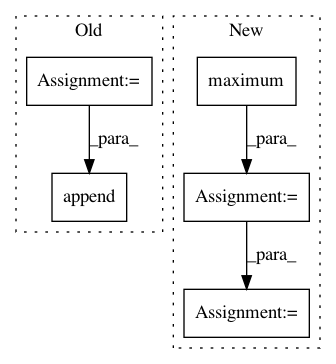

7ad1880b6105b32c002c5fd5863a6d63716412fa,mushroom/environments/inverted_pendulum.py,InvertedPendulum,step,#InvertedPendulum#Any#,50
Before Change
return self._state
def step(self, action):
action = self._discrete_actions[action[0]]
action += np.random.uniform(-10., 10.)
sa = np.append(self._state, action)
new_state = odeint(self._dpds, sa, [0, self._dt])
self._state = new_state[-1, :-1]
self._state[0] = self._range_pi(self._state[0])
After Change
def step(self, action):
u = np.maximum(-self._max_u, np.minimum(self._max_u, action[0]))
new_state = odeint(self._dynamics, self._state, [0, self._dt],
(u,))
self._state = np.array(new_state[-1])
self._state[0] = normalize_angle(self._state[0])
self._state[1] = np.maximum(-self._max_omega,
np.minimum(self._state[1],
self._max_omega))
reward = np.cos(self._state[0])
return self._state, reward, False, {}
In pattern: SUPERPATTERN
Frequency: 3
Non-data size: 5
Instances
Project Name: AIRLab-POLIMI/mushroom
Commit Name: 7ad1880b6105b32c002c5fd5863a6d63716412fa
Time: 2018-04-11
Author: boris.ilpossente@hotmail.it
File Name: mushroom/environments/inverted_pendulum.py
Class Name: InvertedPendulum
Method Name: step
Project Name: dmlc/gluon-cv
Commit Name: ead024f46c366d2e926d4ea8b3862039aa2e69ab
Time: 2018-04-09
Author: cheungchih@gmail.com
File Name: scripts/detection/ssd/train_ssd.py
Class Name:
Method Name: train
Project Name: dmlc/gluon-cv
Commit Name: 0a1ec0a60f037df5544db493e022958de880beb9
Time: 2018-04-09
Author: cheungchih@gmail.com
File Name: scripts/detection/ssd/train_ssd.py
Class Name:
Method Name: train